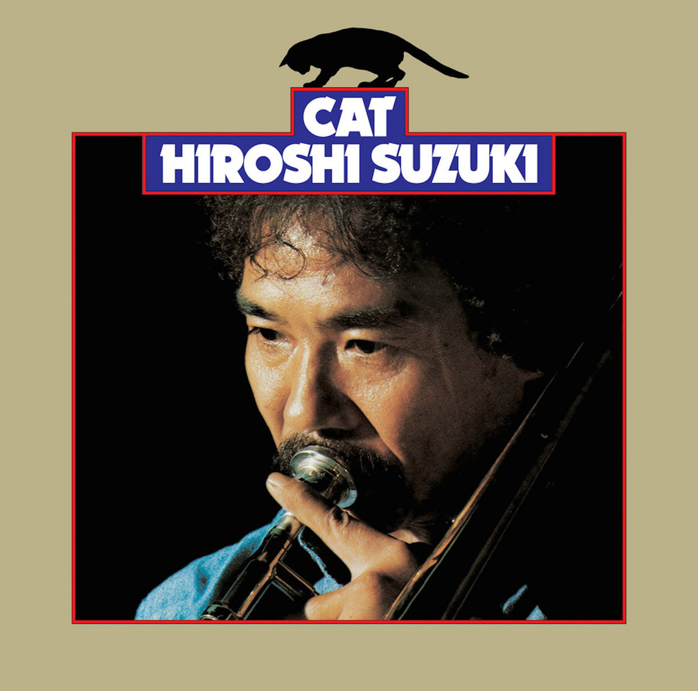
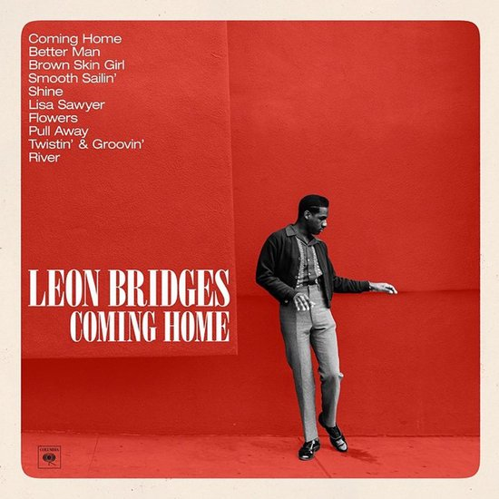
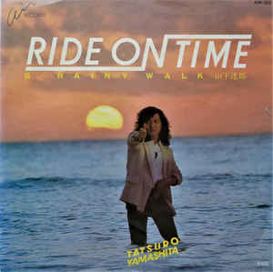

City pop (シティ・ポップ, shitī poppu) is a loose category of Japanese pop music that emerged in the late 1970s and peaked in the 1980s. It was originally termed as an offshoot of Japan's Western-influenced "new music", but came to include a wide range of styles associated with the country's leisure class and nascent economic boom, such as AOR, soft rock, R&B, funk, and boogie. It was also identified with new technologies such as the Walkman, cars with built-in cassette decks and FM stereos, and various electronic musical instruments.
Somewhere between listening to Ryo Fukui’s Scenery and Herbie Hancock’s My Point of View, YouTube Music did me a solid. The service recommended I listen to Hiroshi Suzuki’s Cat, a five-track jazz fusion album released in 1975.
Coming Home is the debut studio album by American singer Leon Bridges. It was released on June 23, 2015, by Columbia Records. The album was written by Leon Bridges, Austin Michael Jenkins, Joshua Block, Chris Vivion and produced by Niles City Sound. Coming Home was supported by two singles: "Coming Home" and "Smooth Sailin'". The album received generally positive reviews from critics, and charted at number six on the US Billboard 200. It was nominated for Best R&B Album at the 2016 Grammy Awards.
In 1973, Yamashita formed the band Sugar Babe with musicians including Taeko Ohnuki and Kunio Muramatsu, and released their sole album Songs two years later in 1975.[13][1] After the group disbanded in 1976, Yamashita signed to RCA and launched his own career, with release of the solo album Circus Town the same year. Also the same year he teamed up with Eiichi Ohtaki, who was the producer of Sugar Babe,[14] and brief Sugar Babe member Ginji Ito to release an album titled Niagara Triangle Vol. 1 that was cited by MTV as one of the finest collaborative efforts from that period